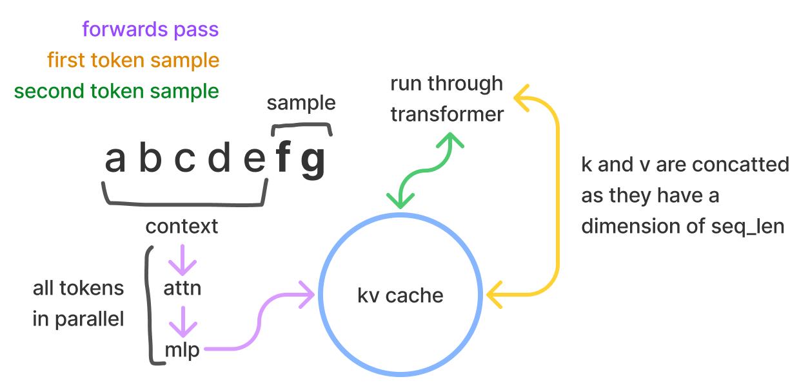
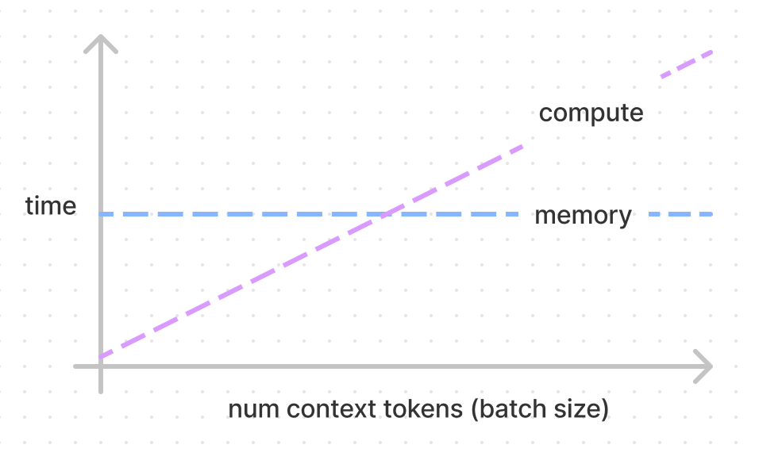
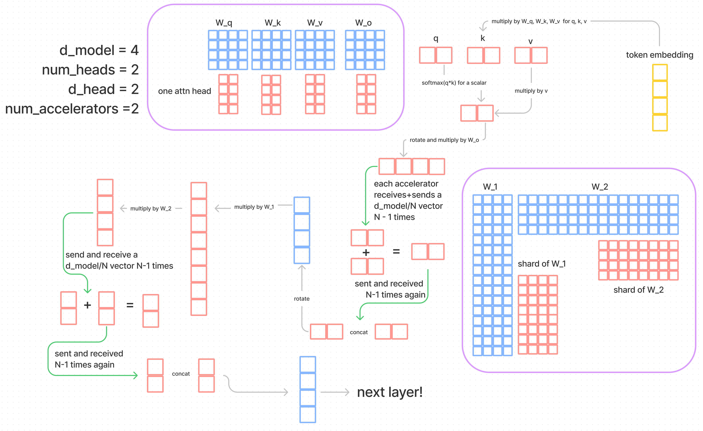
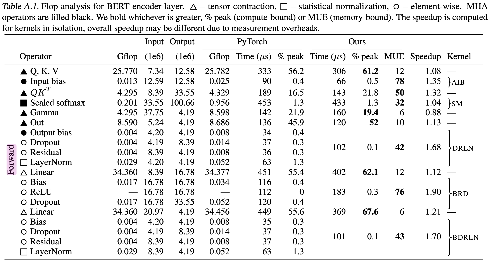

不用跑实验、不碰高深数学，只靠纸笔算式就能相当准确地预测Transformer推理延迟。下文用第一性原理拆解KV Cache、显存、并行、batch size与FLOPs，还原这套推理算术。
这篇文章用少而精的第一性原理推演大模型推理性能，不做实验，也没有高深数学。这样能获得的理解深度和实用性都相当惊人。一个极其简单的推理延迟模型，居然和实测结果拟合得很好，帮作者做出更准的预测、给出更好的解释。
阅读需要一些Transformer先验知识，大致理解图解Transformer的程度即可，配合作者的参数量估算文章食用更佳。
采样时，Transformer推理分两步：先并行处理输入的prompt上下文，再逐个采样新token，自回归就发生在这一步。采样时Transformer做自注意力，需要序列中每个位置的k、v值，无论来自prompt还是已生成的token。这些向量存在一个叫kv cache的矩阵里，也叫past cache，GPT-2开源实现里就叫past，形状是 [batch, 2, num_heads, seq_len, features]。

这么做的目的是采样每个token时不再重算这些向量。有了算好的k、v，省下大量计算，代价是一些存储。每个token存的字节数是：
2 × 2 × n_layers × n_heads × d_head
第一个2是k和v两个向量；每层都存，每个值是n_heads × d_head的矩阵；再乘一个2是因为全文假设16位格式，每个数2字节。
token embedding要乘的权重是：
W_k, W_v ∈ R^(d_model×d_model)
每个token embedding是：
t_e ∈ R^(1×d_model)
于是算所有层的k和v需要的FLOPs是：
2 × 2 × n_layers × d_model²
t_e乘W_k一次要2×d_model² FLOPs，k和v各算一次再乘2，最后乘层数。
矩阵乘法有多少FLOPs？ 矩阵乘向量是2mn，A∈R^(m×n)，b∈R^n；矩阵乘矩阵是2mnp。因为matmul由乘加操作组成，乘算1、加算1。
拿52B参数模型算一笔，d_model=8192，n_layers=64。假设A100，312e12 FLOPS算力，1.5e12 bytes/s显存带宽，只算kv相关权重与计算：
memory = 2 × 2 × n_layers × d_model² / 1.5e12；compute = 2 × 2 × n_layers × d_model² / 312e12
FLOPs受限vs访存受限：做计算要先把权重载入，耗显存带宽。假设载入与计算可以重叠，FLOPs受限指有段时间内存闲着，访存受限指有段时间算力闲着。NVIDIA把这叫math bandwidth。这个划分细到每个kernel，但可以抽象到一组操作。
模型结构此时不重要了，这个硬件规格下算出一个明确的比值208。给一个token算kv，和给208个token算kv花的时间一样！208以下访存受限，以上算力受限。拿剩下权重给上下文做完整前向，同样是208，分子分母各多一个6的因子，后面细说。下图的交点就在208，实际中内存线略有斜率，因为中间计算也有内存开销，最后一节讲。

52B模型完整前向一次，12 × 2 × n_layers × d_model² / 1.5e12 ≈ 69毫秒，可覆盖到208个token。实际会用4卡并行，约17毫秒，后面细说。上下文416个token花双倍时间，312个token花1.5倍。
算一个kv cache token的计算量，正好是token过一遍模型的1/6。一般来说前向传播很便宜，因为上下文可以并行算；采样贵，因为每个token都要把全部权重读一遍，还得自回归。
但这不等于省1/6的时间！假设算力受限，每采样一步省下2×2×n_tokens×n_layers×d_model²/312e12 FLOPs，而解码一步本身要2×12×n_layers×d_model²/312e12。于是每步省下FLOPs时间的1/6再乘序列token数，这个数随采样增长。没有kv cache，采样时间复杂度是token数的二次方。
故事没完，存这个cache有开销和tradeoff。batch很小时可能访存受限，那时连past cache都不想用，宁愿重算，把FLOPs花掉，反正访存的钱已经付了。
GPU里存的两样东西已经清楚了：kv cache和权重。显存容量确实影响Transformer推理性能，现在有足够理解来评估容量问题了。
A100是推理能拿到的最好GPU之一，标准40GB显存。有80GB、带宽2e12的版本，但云厂商还没上架，对作者来说等于不存在。
参数量乘2就是字节数。52B模型的权重：
52e12 × 2 = 104e12 bytes ≈ 104GB
装不进单卡！至少3张卡才放得下权重，切分方法后面讲。3卡共120GB，剩120-104=16GB给kv cache。够吗？回到kv cache单token内存公式，52B模型：
4 × n_layers × n_heads × d_head = 4 × 64 × 8192 = 2,097,152 bytes ≈ 0.002GB
16/0.002 ≈ 8000个token能进kv cache；或者batch 4、每请求2048 token，更少token的话batch还能更大。
这很憋屈：想上更大batch提升效率，却被容量卡住。batch越大，处理同样请求的GPU时间越少。但batch这么小注定访存受限，不如扔掉kv cache直接付FLOPs。
4卡的话56/0.002 ≈ 23000。肯定选4卡：想做大batch，而且把2的幂次拆到3张卡上很别扭。不只是batch，高并发下会有多个模型实例，每个实例都想batch尽量大，反正存权重的钱已经付了。
中间计算步骤也占一点空间，但可忽略。
模型并行的完整实现细节不展开，资料很多。这里只讲对性能决策和通信开销计算有用的部分。
模型并行的效果：把所有权重过一遍内存的开销和FLOPs，都除以并行度，即加速卡数量。
假设张量并行，把模型从中间劈开。每张卡拿着权重分片尽量算，同步时再通信。更naive的是流水线并行，每卡拿一部分层，权重载入开销倒是摊匀了，但同一时刻只有一卡在干活。训练时可以流水打拍，但单样本推理不行。流水线还有个问题是吃不满内存带宽，不过算力受限时无所谓。流水线唯一赢的是通信：流水线每卡通信d_model，张量并行每层通信N×d_model，N是加速卡数。
再补一个A100常数：通信带宽300GB/s。官方文档写600GB/s，是把进出各300GB/s加起来了，算的时候用双向数更直观。

看图跟着走：token embedding从模型底部进入，紫色框是权重在各卡上的切分，模型画得很小以便按比例画。X和Y都切分后相乘，拼起来会得到过大的矩阵，正确做法是通信、算分片和、把和通信回去再拼，得到X与Y相乘的输出。
注意力的并行很直观，因为有多头。大部分注意力层不用通信，直到多头结果拼起来乘Wo。乘完v再乘自己分片的Wo，得到o的分片o∈R^(d×h/N)。每卡把自己的分片发给所有卡，也收回别人的分片，通信量 (N-1)×d_model/N。每卡做一份加法得到输出投影，再通信一次，各自拼起来，近乎瞬间。
MLP层同理：W1∈R^(4d×d) 把维度放大4倍，W2∈R^(d×4d) 投影回来，MLP末尾做同样的两次通信。
最终通信量是4×(N-1)×d_model/N字节，kv cache按头分到各卡。
容量讲透了，模型并行的通信也画出来了，计算步骤也清楚了，现在组装成估计延迟的公式！
延迟计算核心是FLOPs受限还是访存受限。每参数的乘法少就可能被带宽卡住。FLOPs随batch和参数量涨，内存只随参数量涨。
通信不看受限类型，直接加延迟项和吞吐项，带宽300GB/s。延迟项不好估计，只能猜个很小的值，约8微秒每条消息，数字来自一篇V100 NVLink的论文。
算单token解码延迟有两个公式：小batch走访存带宽bound，大batch走FLOPs bound，大batch下通信的延迟项可扔掉。
小batch，比如1，batch因子可省掉的公式，N是加速卡数，P是参数量，b是字节单位：
compute = 2 × P × b / (N × A_bm)；comms = 4 × n_layers × 8μs
2×P是因为全部参数过一遍内存，每个参数2字节；A_bm是加速卡内存带宽，开销由各卡分摊。通信每层4次，每次一个请求的延迟。通信通常很小，算力受限时更不用管，吞吐开销也约得掉。
还有个时而显著的因子是kv cache读取时间，这里先略去，随上下文token数变化，batch内也可能各不相同，按内存带宽时间算。另一个漏掉的内存带宽时间是每采样步读unembedding算logits，形状R^(d×n)。
内存其实不恒定，每batch的中间激活多占一些。没法细算，因为随软件栈、编译器优化变很多，干脆不计。
大batch，比如512，B是batch size：
A_f是加速卡FLOPs，A_c是通信带宽。做2×P的FLOPs操作，直觉是把全部参数matmul一遍，矩阵乘向量就是2mn。
通信是每层4次、每次一个d_model向量，N-1约成N，延迟换成吞吐算法，再除以通信带宽。
拿Gopher级260B模型、16卡玩一下：小batch每生成一个token 22ms。通信吞吐开销按大batch公式算约35微秒，扔掉是安全的。
batch 512的大batch，每batch每token 53ms，62ms内生成512个token。通信延迟开销约3ms，延迟不随batch放大，消息可以一起准备，假设通信计算并行，扔掉也还好。
通信和计算取大者，假设两者并行。绝不能让通信超过计算，否则加卡也降不到零延迟，通信会越来越拖后腿。当然不是所有系统都并行，更不是完美并行。
这些数字比真实沙盒低得多：假设硬件利用率最优，没算softmax，通信延迟按零，大量小因子全忽略。但这套数学背后的推理，对找优化方向、估计优化收益很有用。
Batch size是性能的关键因子，尤其要理解具体场景的性能。
上一节有两个公式，分访存受限和算力受限。比一下就知道谁在起作用：
用的还是kv cache那节的比值：访存受限的最小batch是A_bw/A_f=208，很好用的比值！有负载就选算力受限，计算效率更高。但算力受限时再加大batch，速度不会更快。
kv cache占主导还是权重占主导，算一下就行，也不是非黑即白，kv cache超过权重没什么神奇的事发生。通信也没什么神奇点。batch加大到某点，吞吐压过延迟，延迟项就扔了。之前观察到延迟变得不重要的点很靠后，52B模型batch 512时通信开销还有11% 是延迟。
通信有个被过度简化的地方：分4步发生。所以不只要计算时间大于通信时间，每一步都要大于，前提是计算通信能并行。这里有个更怪的比值：每字节通信的FLOPs。下面这张表很有用，下一节也用得上：
312e12/300e9=1040，这是A100每字节通信的FLOPs。希望表里最后一行的值大于硬件值，这样就保持算力受限，前提是访存不拖后腿。embedding维度超过1024的模型每卡都安全，512就有点别扭。
低负载API的batch会很小，扔掉kv cache是合理决定。有大batch负载的API，可能想取刚好算力受限的最小batch，哪怕还有容量空着，这样单请求延迟最优。像AlphaCode这种大批量推理任务，卡有多少上多少，batch拉到容量顶。
说了很多可能，其实这三类场景的结论作者认为是绝对的。
| q,k,v | o | w_1 | w_2 | |
|---|---|---|---|---|
| flops | 3B(d_model²) | B(d_model²) | 4B(d_model²) | 4B(d_model²) |
| bytes of comms | B(d_model) | B(d_model) | B(d_model) | B(d_model) |
| flops/byte | 3(d_model) | d_model | 4(d_model) | 4(d_model) |
前面说过matmul过全部参数是2×P的FLOPs，直觉没错，现在把Transformer每一步走一遍，验证确实是2P。
以下按每token、每层算。先写W_q, W_k, W_v ∈ R^(d_model×d_model)，更准确的是每个头W_q^i, W_k^i, W_v^i ∈ R^(d_model×d_head)，i到n_heads。为算延迟，把多头并进Wq、Wk、Wv里简化。
算qkv：t_e∈R^(1×d_model) 乘Wq、Wk、Wv∈R^(d_model×d_model)，FLOPs数2×3×d_model²。
算z：softmax((q·k)/d_head)·v=z，没有矩阵乘法，FLOPs量级是d_model的常数倍。
乘输出投影：Wo∈R^(d_model×d_model) 乘z∈R^(d_model×1)，FLOPs数2×d_model²。
前馈：MLP权重W1∈R^(4d×d)、W2∈R^(d×4d) 做两次线性变换，中间一个ReLU很小，FLOPs数2×8×d_model²。
其他：每次注意力后有layernorm，权重是长d_model的向量；顶上还有一层线性和softmax，就是输出token embedding，即unembedding；原始Transformer还有余弦绝对位置编码，是token embedding上的加法。
把FLOPs加起来！代入8192的模型，应该约100B FLOPs：
103079215104除以2约51.5B。比52B少一点，因为token embedding表快10亿参数。用2×12×n_layers×d_model² 代替2×P做延迟计算也合理，差不到2%。
z的计算和其他没数的步骤呢？都是向量-向量甚至向量-标量操作，量级是d_model不是d_model²。每层就算有100个这种操作，也才1亿FLOPs，是数过的FLOPs的0.1%。
Data Movement Is All You Need这篇论文有个漂亮的分类法：张量缩并，即关心的大matmul和线性层；统计归一化，即softmax和layernorm；最后是逐元素操作，bias、dropout、激活函数，本文到现在一直忽略。
那matmul、layernorm这些的延迟怎么算？硬件标的FLOPs专指乘加操作，别的就算数得出FLOPs也不能往里计。意外的是softmax只耗内存读写，因为带宽FLOPs比摆在那。这就是之前说的延迟因子！
这里要破一下第一性原理的人设，讲讲那篇论文的表A.1。softmax延迟居然比qkv计算还略高，qkv只占1/3时间，有点吓人。

同理qk乘法、ReLU、dropout也贵，因为访存受限。
GPU Kernel融合：GPU按kernel为单位执行操作。kernel融合是把两个kernel并成一个，主要复用内存载入、减少冗余读写。比如乘加是一个kernel，拆成两个的话，一个做载入加法存储，另一个做载入乘法存储，并成载入加法乘法存储，省很多趟内存。
数读写次数能看出这里的softmax没融合好：理论上一次读一次写就够，业界标准是4次，这里算宽容了。qk该是两次读一次写，两次读多半能省。三比一说明softmax的内存趟数没做到最优。这也说明这种计数多依赖软件实现，得靠实验估计，理论上开销甚至可以是零。
还值得注意：模型越大，这些操作的时间占比掉得越快，内存按d_model涨，FLOPs按d_model² 涨，都是每层。那篇论文的模型336M参数，d_model=1024，n_layers=24。
把Ours列里访存受限的值连逐元素操作一起加起来，中间步骤占43% 时间。放到52B模型，d_model大8倍，这些操作就不显著了。
这些访存受限的中间操作，耗时随d_model线性涨8倍；FLOPs涨64倍，FLOPs时间也涨64倍。
用那篇论文的优化，52B模型推理延迟里这些没计入的中间计算约占5%。
作者在做语言模型的公司，有自己的infra和benchmark，但IP敏感。公开的模型并行推理benchmark很少，只有NVIDIA FasterTransformer和微软DeepSpeed，论文里可能还散落一些。不管怎样，可以拿计算结果和真实benchmark对一对！
只用2卡，在FasterTransformer上跑13B参数模型，该框架做了不错的kernel融合，支持张量并行。13B是40层、40头、每头128维，d_model=5120。有profile截图，里面不少有意思的东西，够另写一篇。
上下文512、batch 1、输出10个token起步。小batch单token：2卡预期8.4ms、通信约1ms；1卡则是16.8ms、零通信。公式：2×40×12×5120²/1.5e12。
有效数字有点乱，内存带宽本该用1.555不用1.5。
1卡实测22.0ms，猜中了76%。差的部分都能解释：中间激活占一点，实际拿不到100% 理论带宽。按profile，这个维度下matmul kernel能跑到约90% 带宽，计入后期望18.5ms；中间激活从profile加2.2ms，到20.7ms；剩1.4ms是token embedding、top-k/top-p采样、带宽不到90%、kernel启动时间这些亚毫秒小项。
2卡实测13.5ms，这次只猜中62%。再看profile查带宽，小tensor带宽利用率更低，这次不到90，只有87左右，得到9.5ms；中间激活类似，2ms，到11.7ms；剩1.5ms找通信！算出的1ms通信没并行，正好覆盖。profile里通信每层40-50微秒，共约1.7ms，账全对上了。
两次的中间激活计数都偏高了，因为profile给的延迟比裸benchmark稳定偏高。benchmark输出是180.86ms、283.60ms，其中上下文部分各45.45ms、63.17ms。
前向传播呢？预期是解码步乘以token数除以FLOPs带宽比，因为所有token要发给所有卡，每卡做自己头的注意力并存kv。内存带宽按90% 折算更新为312e12/(1.5e12×0.9)=231。1卡setup，解码步22ms，22×(512/231)=48ms，离声称的63ms差一截；2卡13.5×(512/231)=30ms，差更多！
1卡缺的时间，一部分是存kv。profile里每层18微秒，共0.7ms；还有Memset 0.2ms。MLP乘法的FLOPs时间预期512×4×5120²×2/312e12=344微秒，实际最低476微秒，只拿到72% 的FLOPs；注意力投影预期512×5120²×2/312e12=86微秒，实际最低159微秒，只有54%。吓一跳，但这就是实际FLOPs效率，那篇论文图14里512×4000×4000的matmul也跑不到150TFLOPs。
留12道练习题，检验这套算术：
1. 给定batch、上下文长度和next_n，怎么算用kv cache省多少？
2. kv cache在内存时间上加了哪些开销？
3. 前向传播访存受限、采样步算力受限，可能吗？
4. 超出容量需求多上卡，比如52B上8卡或16卡，有什么tradeoff和算法？
5. 有了单token时间公式，怎么做完整采样的总时间，从上下文前向到采完所有token？
6. 容量节说中间计算内存可忽略，到底小到什么程度？
7. batch节跑题讲了每字节通信FLOPs，embedding维度512时tradeoff是什么？
8. 假设同机多卡，如果像训练那样跨机通信呢？AWS有400Gb/s网卡，怎么看？
9. 模型并行节里，可以让各卡通信全部shard再各自做完整加法，不只做一份，延迟影响是什么？
10. 算52B在4卡、batch 256的大batch速度：计算约21ms，通信约4ms。
11. 最后一层向量乘unembedding矩阵、存logits、再做top-k/top-p采样要排序，52B上多久？哪些能并行？
12. token embedding怎么切？输入embedding和unembedding切法一样吗？layernorm呢？多哪些通信？
参考：https://kipp.ly/p/transformer-inference-arithmetic